A photo dump of my 4-week trip to Vietnam over winter break 2022.
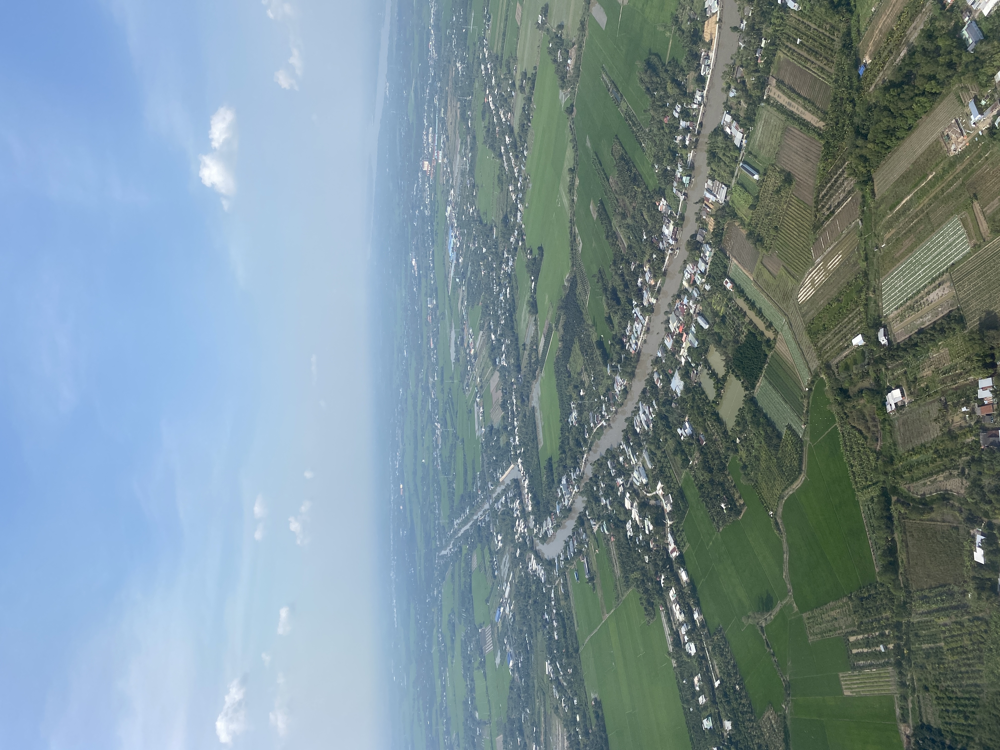
 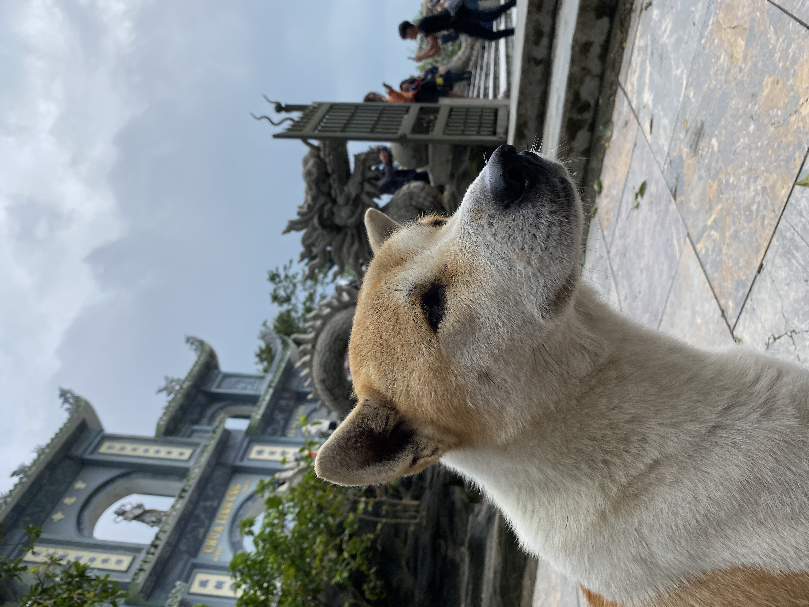
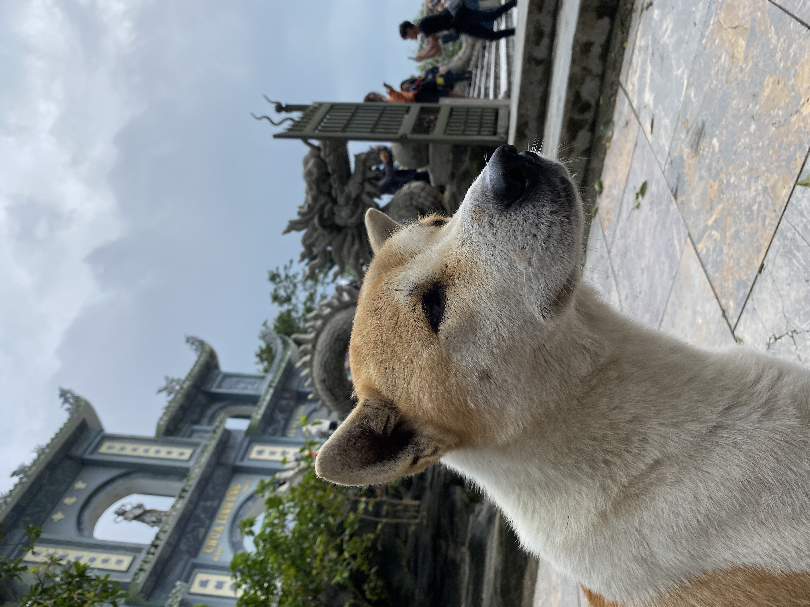

• Da Nang, Việt Nam
My family's second destination after landing in Sài Gòn (Ho Chi Minh City), Da Nang is a coastal city located in central Việt Nam and home to Chùa Linh Ứng, a Buddhist temple with a 220 foot statue of Lady Buddha as pictured. Standing so large, the statue could be seen from our hotel over 30 miles away. Like the rest of the country, there were many stray dogs residing on the temple grounds and were very friendly to tourists, almost as if they were sacred space's guardians. After a long morning of exploring the expansive temple, I had the best bowl of mì quảng that I ever had in my life.


 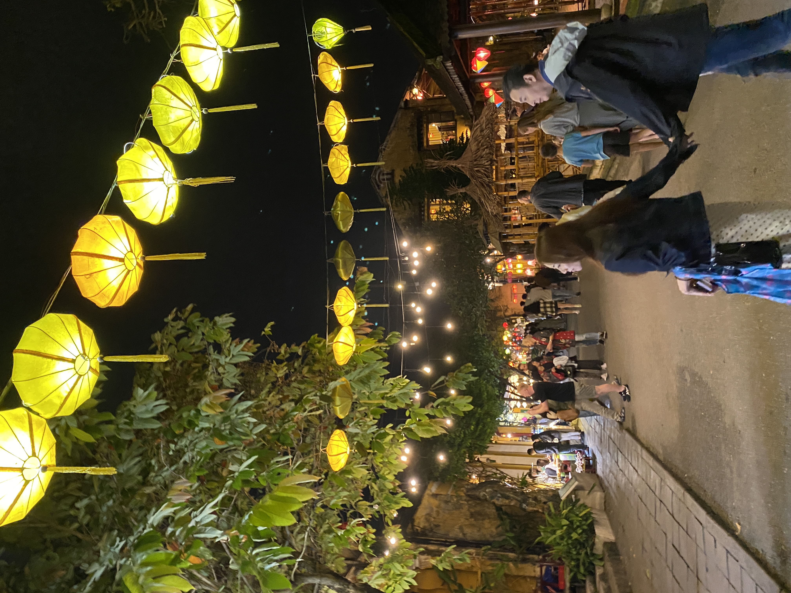
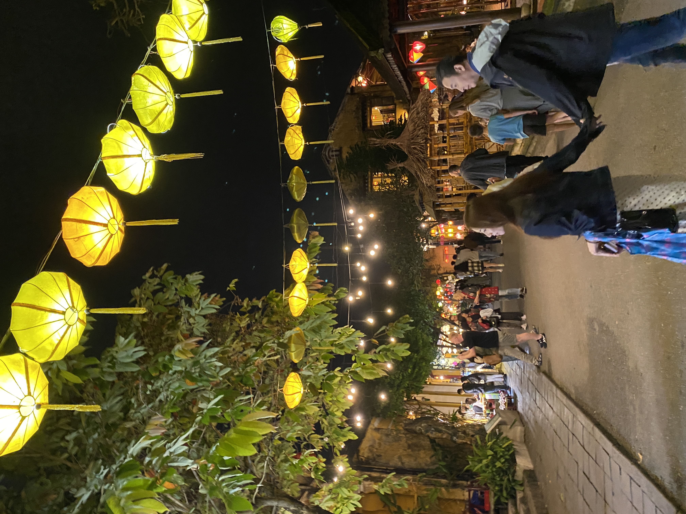
 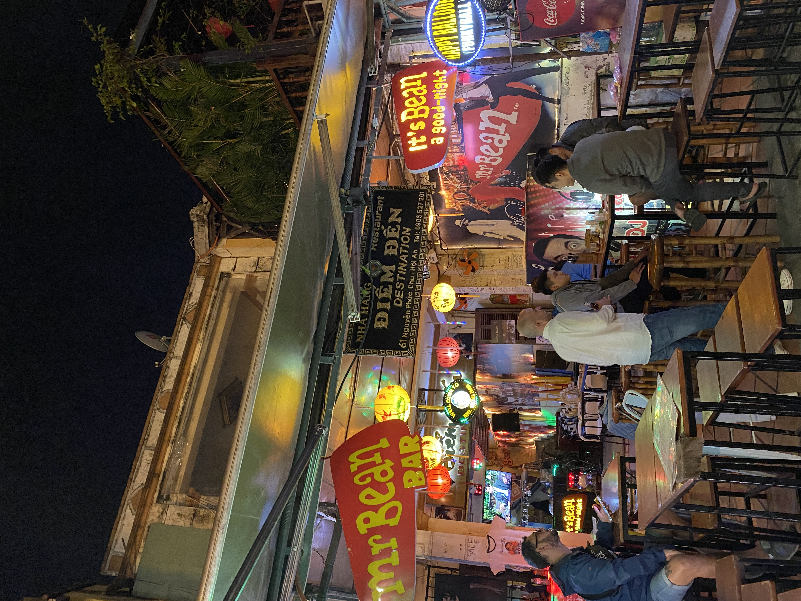
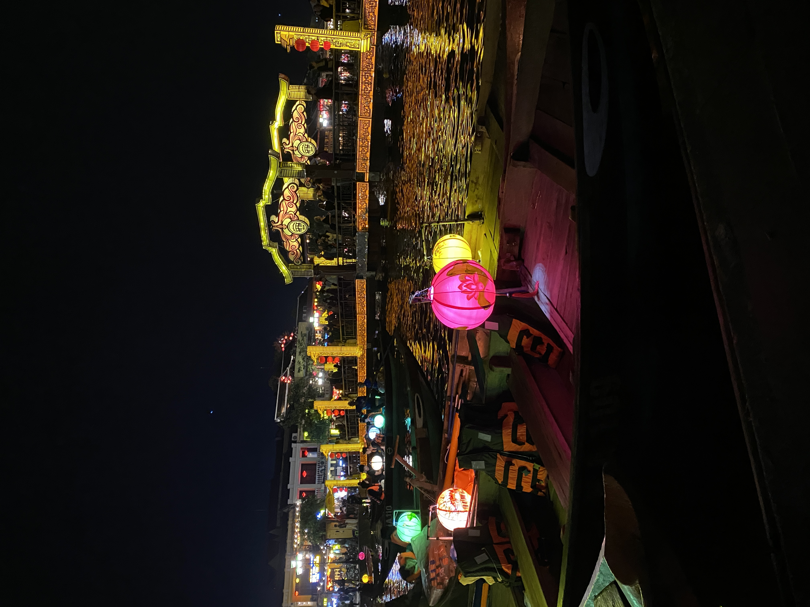
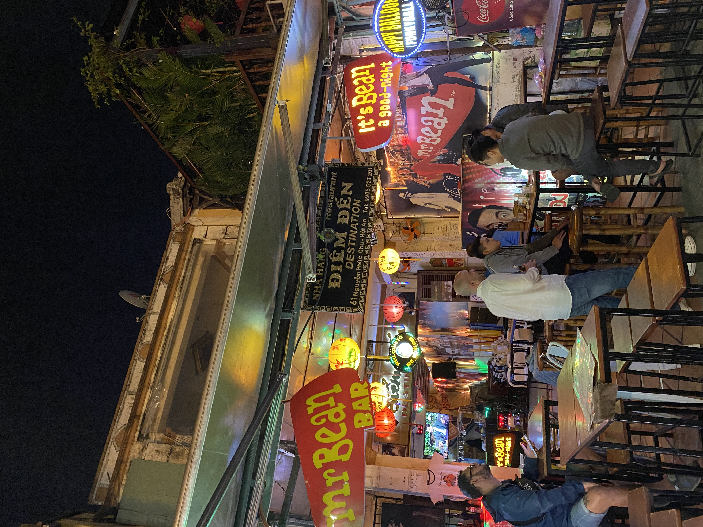
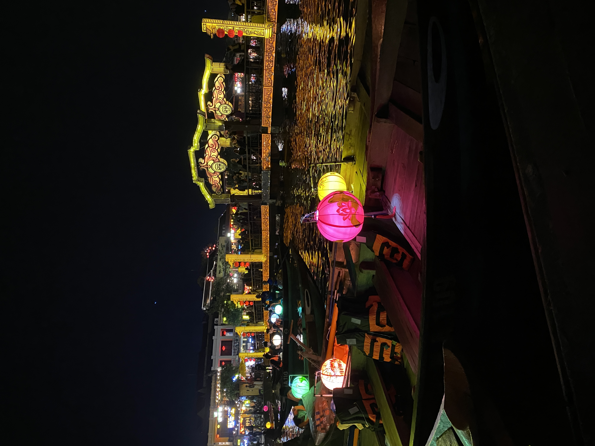
 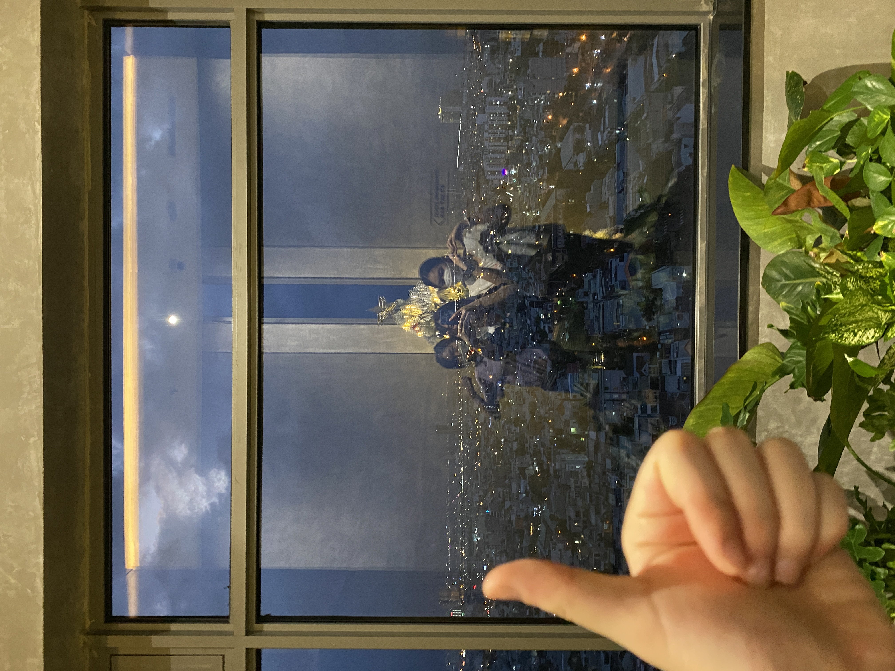
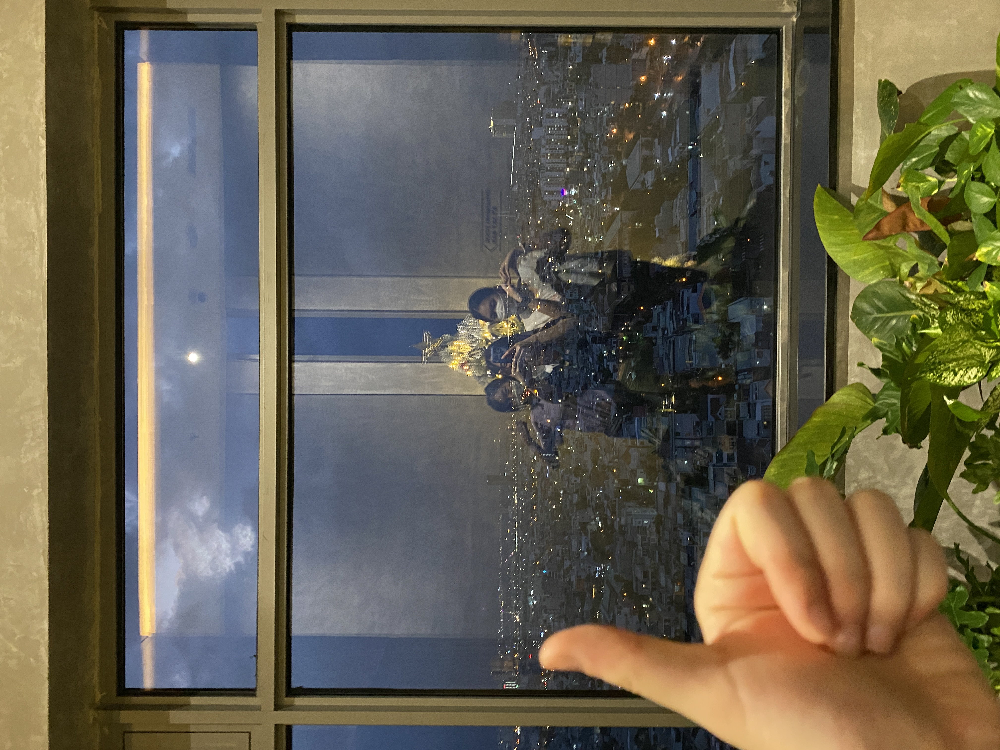

 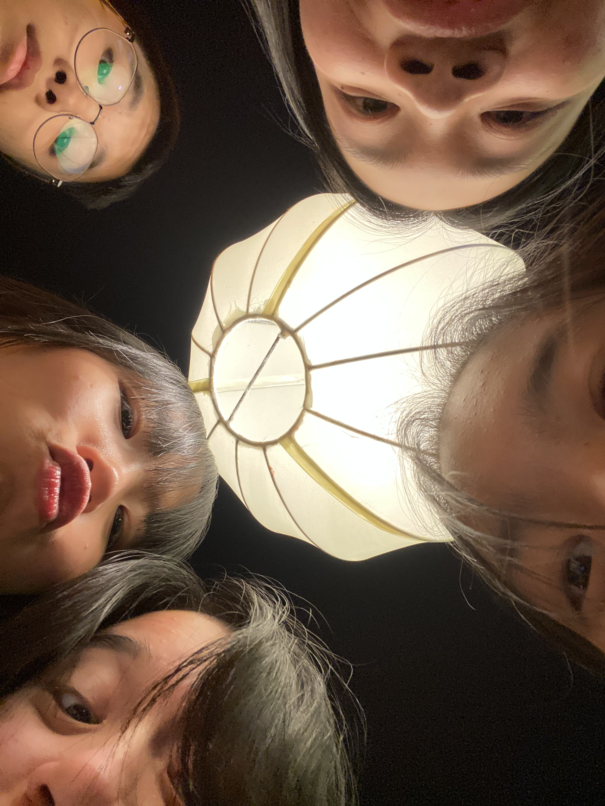
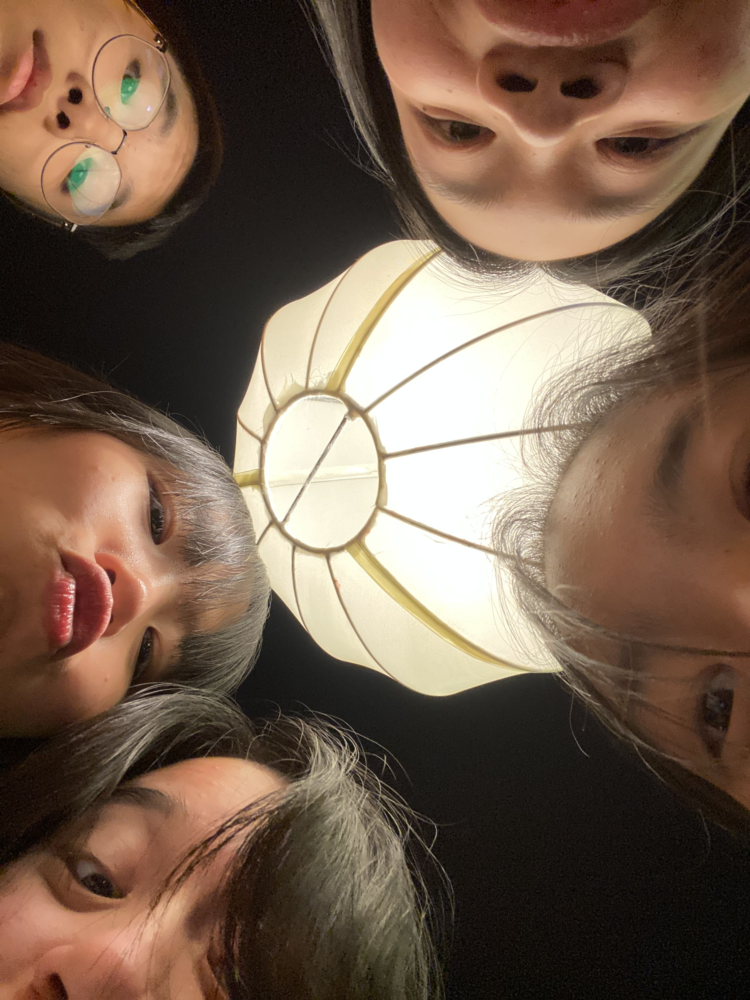